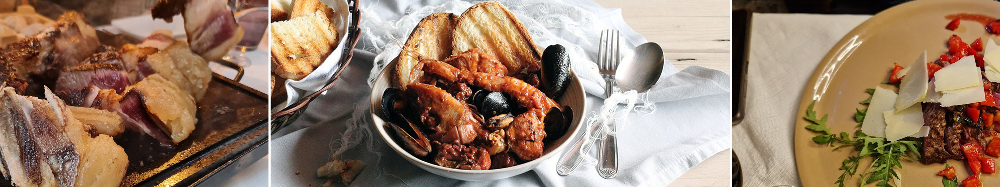
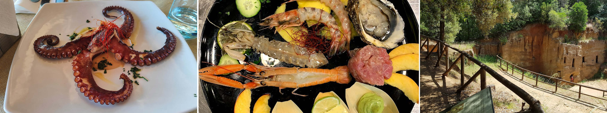
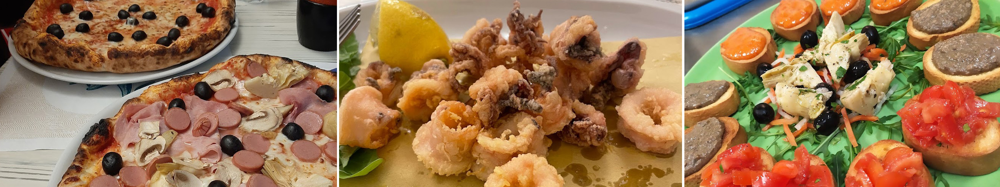
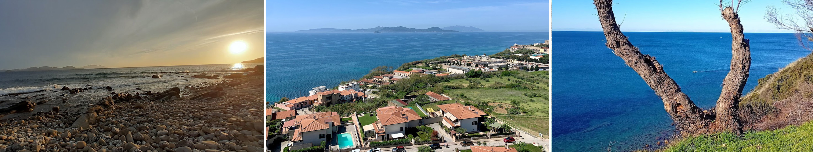
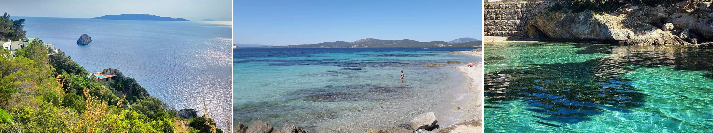
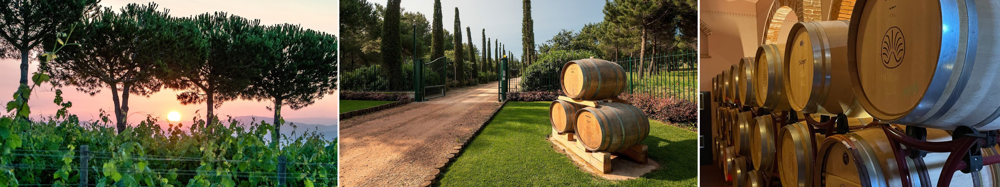
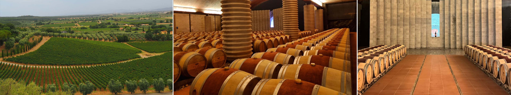

DaLuca Ristorante Enoteca Piombino
"In the heart of Corso Vittorio Emanuele II. Warm hospitality, courtesy, and a wide selection of dishes, the perfect combination for those who love to spend a pleasant evening and eat well. Excellent food with attention to presentation and a rich wine list. The possibility to sit outdoors while maintaining a proper distance from the bustling nightlife of the main street. Chef Irene, along with Jucy, will ensure your experience is unforgettable!"

I Tretruschi Srl
"Located near the archaeological park of Baratti with a splendid view of the same gulf. The restaurant is skillfully managed by Fabio and Gaetano. The seafood grill is excellent, and the desserts are delightful. They are open every day for both lunch and dinner."

Pizzeria Da Egidio
"The pizza is excellent, as is the seafood Carbonara and much more. Just a few steps away from Aquadro holiday home."

Salivoli
"Marina di Salivoli is one of the few beaches in Piombino entirely made of sand and frequented by both families with young children and young people. Located near the Tourist Port, the beach is small and composed of light sand and pebbles. Moving away from the city center, you'll encounter one of the most beautiful beaches in the Val di Cornia: Cala Moresca."

Calamoresca
"Calamoresca is a small gulf, one of the most beautiful urban beaches in the Val di Cornia, well-known and frequented by tourists as well as locals. This could easily be described as an authentic 'Caribbean gem,' distinguished by its clear water that in the evening sets the perfect stage for a magnificent and romantic sunset overlooking Elba and Gorgona. On-site amenities include a bar, restaurant, and bathing establishment."

Tenuta Poggio Rosso
"Tenuta Poggio Rosso is located in the western part of the Val di Cornia, in the territory of Populonia, one of the largest and most important Etruscan and Roman cities. Through guided tours and tastings, Tenuta Poggio Rosso offers everyone the opportunity to connect with its beauty, a unique and significant expression of the Val di Cornia. The approximately 1-hour tour includes visits to the vineyards, the wine cellar, and the barrel room, concluding with a tasting of the wines. Guided tours are available by prior reservation via phone at +39.0565.29553 or by email at
commerciale@tenutapoggiorosso.it, where you can also inquire about costs and reservation."

Società Agricola Petra
"Before being a winery, Petra is a natural oasis that extends over 300 hectares, encompassing the green belt of the Metalliferous Hills, Montioni Park, Poggio Tre Cancelli Reserve, and Sterpaia Park, overlooking the Tyrrhenian Sea. In this unique ecosystem, Francesca Moretti and her family's dreams come to life, pioneers in Franciacorta with Bellavista Winery and L'Albereta Resort. Exploring the winery and estate means delving into the history of a project, traversing all its stages, from the birth of the first vines to the architectural form shaped by a profound respect for the place's identity. From agricultural practices to production, everything is inspired by a principle of utmost naturalness, and the winery's design is ultimately its purest symbolic expression. Three different paths, but for each, the certainty of entering the heart of a winery that has made architectural signature the most immediate and sincere expression of its oenological approach to an unprecedented corner of Tuscany. PETRA CLASSIC, PETRA UNDER THE TUSCAN SUN, and PETRA EXPERIENCE are the names of the three offerings. The availability of time is the key factor that sets them apart. While in an hour and a half you can immerse yourself in the world of Petra to learn all its essential aspects, - from the vineyard to the most representative wines -, with two hours or, even better, with three hours, you'll be able to recognize the nuances of nature and taste in a crescendo of emotions and surprises that change depending on the seasons and product novelties."
